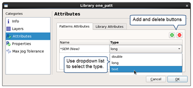
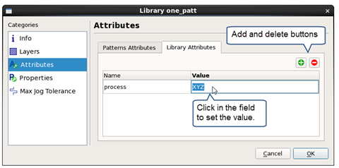

Adding Custom Attributes to a Library
You can add custom attributes to a library using the Calibre Pattern Matching GUI. There are two types of custom attributes: custom library attributes and custom pattern attributes. Attributes are only saved in the pattern library—they are not used in a pattern matching run and are not attached to pattern matching results.
Attribute Type |
Description |
|---|---|
Custom library attribute |
One value is assigned at the library level. |
Custom pattern attribute |
A unique value can be assigned in each pattern. All patterns must have the same set of attributes, but the value is assigned per pattern. |
For a general description of attributes, see “Attributes”.
Prerequisites
A pattern library is open in the Calibre Pattern Matching GUI. See “Invoking the Calibre Pattern Matching GUI”.
Procedure
- (Optional) Click the Pattern
Attributes tab to add custom pattern attributes.
- Click the
 button
to add an attribute.
button
to add an attribute. - Click in the attribute name to change it.
- Select the attribute type with the dropdown
list. You cannot change the type after you save the library.
The attribute is added to all patterns in the library, without an assigned value. Set the value in the pattern view using the Attributes tab.
Figure 1. Adding a Custom Pattern Attribute to a Library - Click the
- (Optional) Click the Library
Attributes tab to add custom library attributes.
- Click the button
to add an attribute.
- Click in the attribute name to change it.
- Click in the Value field to assign a value.
Figure 2. Adding a Custom Library Attribute - Click the
- (Optional) To delete an attribute from a
library, select the name in the Library dialog box and click the
delete button (
 ).
Deleting an attribute removes it from all patterns in the library.
).
Deleting an attribute removes it from all patterns in the library.